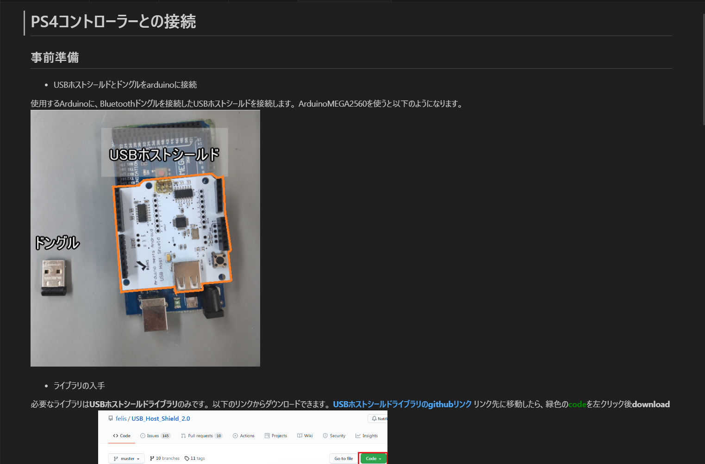

関西在住の高専4年生です。メカトロ系の学科に在籍しています。
主に部内の教育資料作成、機構プログラム作成などを担当していました。 情報共有プラットフォーム"esa"を活用して、C言語の基本要素及び論理処理、Arduinoを用いた各機構の制御等について記述、公開しました。
前期特別研究では、雨水のろ過実験ならびに装置設計を行いました。 プラスチック製のゴミ箱を筐体として使用し、ろ過部分にはペットボトルと市販の砂利・砂・キッチンペーパーを用いて構成しました。
授業やクラブ活動、文化祭活動、趣味を含めて利用経験のあるハードウェアやソフトウェアの一覧です。習熟度の目安として累積使用時間が10時間以上のものを「☆」、30時間以上を「☆☆」、100時間以上を「☆☆☆」と表記しています。
遊戯王、格闘ゲーム等を嗜んでいます。友人間のサーバーで数か月間、大会運営を行っていました。